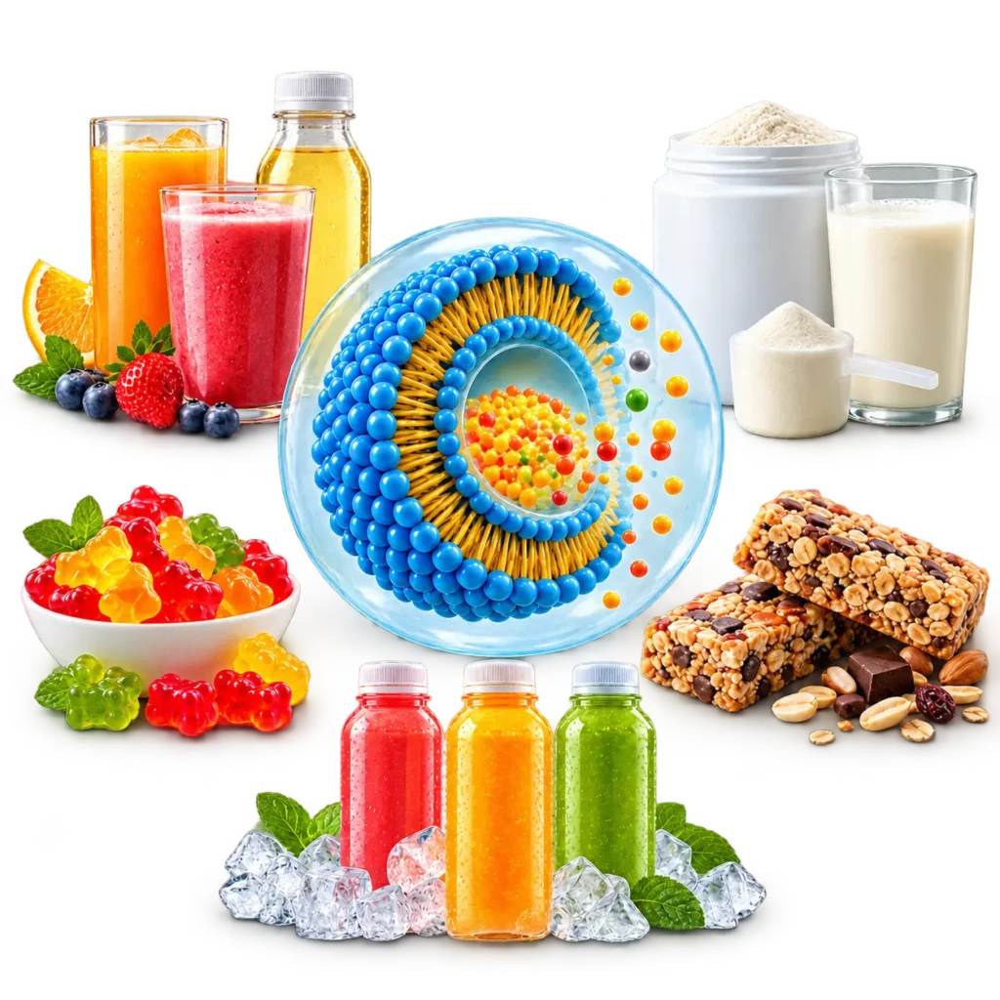
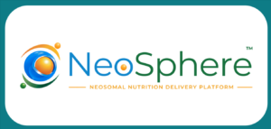
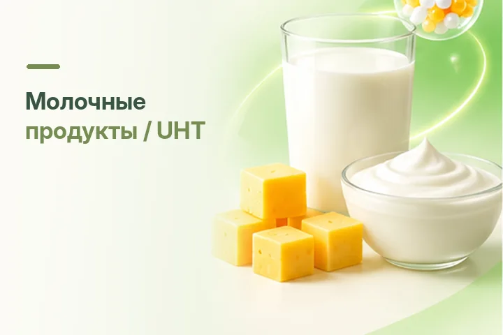
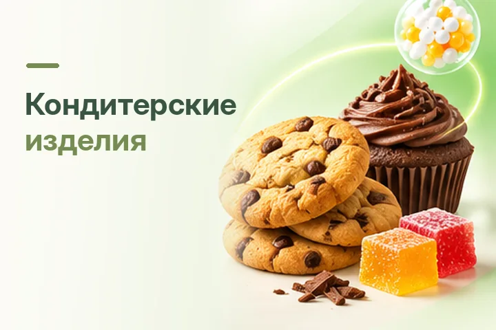

Растительная платформа для витаминов, минералов и каротиноидов: водорастворимые и жирорастворимые активы в одной системе, без фосфолипидов, холестерина и органических растворителей.

NeoSphere™ — ниосомальная система доставки на растительной основе, созданная из эфиров сахарозы, фитостеринов и гуммиарабика. Она повышает стабильность, растворимость и биодоступность чувствительных нутриентов.
Водорастворимые активы, например витамин C, помещаются в водное ядро, а жирорастворимые — витамин D3 и лютеин — в защитную мембрану. Это единая пищевая система с чистой этикеткой: без фосфолипидов, холестерина и органических растворителей.

Ниосомальная система работает на трёх уровнях — от стабильности актива до характеристик готового продукта.
Нутриенты защищены от окисления, света и температуры, в том числе в процессах с UHT. Цвет и вкус продукта меньше меняются от воздействия железа.
Поддерживает доставку нутриентов; преимущества по всасыванию и биодоступности требуют подтверждения для конкретного продукта. Прозрачные стабильные дисперсии в напитках и равномерное распределение.
Гидрофильные и липофильные активы в одной системе. Растительные вспомогательные вещества, чистая этикетка. Масштабируемое производство без растворителей.
Три этапа формирования и работы везикулы.
Пищевые неионогенные эфиры сахарозы формируют защитную мембрану везикулы; фитостерины уплотняют и стабилизируют её.
Водорастворимые активы и пирофосфат железа находятся в водном ядре; жирорастворимые — витамин D3 и лютеин — в мембране.
Наносферы гуммиарабика образуют стерический и электростатический барьер, защищая активы от света, температуры и окисления.
Четыре ниосомальных нутриента на одной растительной платформе.
Ниосомальный витамин C. Повышенная стабильность к окислению, улучшенное всасывание; витамин C удерживается в водном ядре.
Ниосомальный витамин D3. Повышенная растворимость и диспергируемость, защита от света и температуры; витамин D3 в защитной мембране.
Ниосомальный лютеин. Защита от окисления и изомеризации, повышенная биодоступность; лютеин в защитной мембране.
Ниосомальный пирофосфат железа. Наноразмерное диспергирование для лучшего всасывания, минимум изменений цвета и вкуса.
Предлагаемая структура показана не в масштабе. Эффективность зависит от продукта, рецептуры и условий производства.
Жидкие и твёрдые форматы, где важны стабильность при обработке, диспергируемость и сенсорика.




Ниосомальная платформа доставки на растительной основе от PHS Life Sciences для витаминов, минералов и каротиноидов.
В составе указаны эфиры сахарозы, фитостерины и гуммиарабик.
Да. Водорастворимые активы помещаются в водное ядро, жирорастворимые — в мембрану.
NeoSphere™ C, NeoSphere™ D3, NeoSphere™ Lutein и NeoSphere™ Iron.
В напитках, готовых напитках (RTD), UHT-продуктах, жевательных мармеладках и батончиках.
Да. Свяжитесь с Эксимин, чтобы запросить образцы, спецификации и испытания в вашей рецептуре.
Пришлите состав продукта и требования к рецептуре — подберём технологию, пришлём образцы, спецификации и данные по применению.